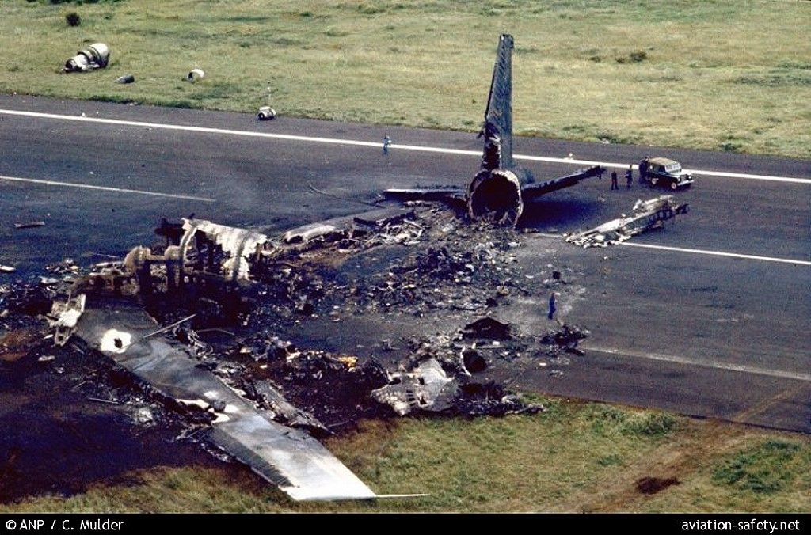
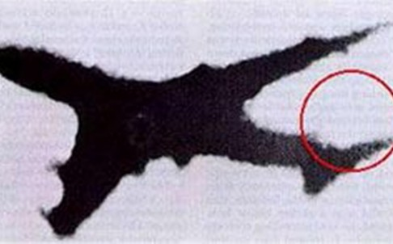
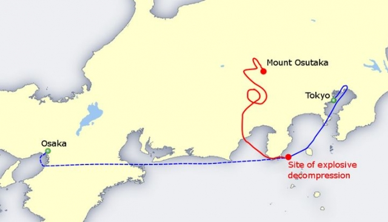

This website will guide you through the three worst air crashes in human history as determined by the number of fatalities. You will navigate through the stories by scrolling down the page and we hope you will enjoy this small voyage through time.
March 27, 1977, two Boeing 747 passenger jets, KLM Flight 4805 and Pan Am Flight 1736, collided on the runway at Los Rodeos Airport (now Tenerife North Airport), on the Spanish island of Tenerife, Canary Islands, killing 583 people in the deadliest accident in aviation history.
A terrorist incident at Gran Canaria Airport had caused many flights to be diverted to Los Rodeos, including the two accident aircraft. The airport quickly became congested with parked aircraft blocking the only taxiway and forcing departing aircraft to taxi on the runway instead. Patches of thick fog were also drifting across the airfield, preventing aircraft and control tower from seeing each other.
The collision occurred when KLM 4805 initiated its takeoff run while Pan Am 1736, shrouded in fog, was still on the runway and about to turn off onto the taxiway. The impact and ensuing fire killed everyone on board the KLM jet and most of the occupants of the Pan Am, leaving only 61 survivors from the aircraft's front section.

The subsequent investigation by Spanish authorities concluded that the primary cause of the accident was the KLM captain's decision to take off in the mistaken belief that a takeoff clearance from air traffic control (ATC) had been issued. Dutch investigators placed a greater emphasis on mutual misunderstanding in radio communications between the KLM crew and ATC but ultimately, KLM admitted their crew was responsible for the accident and the airline agreed to financially compensate the victims' relatives.
The disaster had a lasting influence on the industry. An increased emphasis was placed on the importance of using standardized phraseology in radio communications. Cockpit procedures were also reviewed, contributing to the establishment of crew resource management as a fundamental part of airline pilots' training.
Japan Airlines Flight 123 was a scheduled domestic Japan Airlines passenger flight from Tokyo's Haneda Airport to Osaka International Airport, Japan.
On Monday, August 12, 1985, he suffered a sudden decompression 12 minutes into the flight and crashed into two ridges of Mount Takamagahara in Ueno, Gunma Prefecture, 100 kilometres (62 miles) from Tokyo 32 minutes later.
The aircraft landed at Haneda from New Chitose Airport at 4:50PM as JL514. After more than an hour on the ramp, Flight 123 pushed back from gate 18 at 6:04 p.m. and took off from Runway 15L at Haneda Airport in Ōta, Tokyo, Japan, at 6:12 p.m., twelve minutes behind schedule. About 12 minutes after takeoff, at near cruising altitude over Sagami Bay, the aircraft's aft pressure bulkhead burst open due to a pre-existing defect stemming from a panel that had been incorrectly repaired after a tailstrike accident 7 years earlier. This caused a rapid decompression, with pressurized air rushing out of the cabin, bringing down the ceiling around the rear lavatories. The compressed air then burst the unpressurized fuselage aft of the bulkhead unseating the vertical stabilizer and severing all four hydraulic lines. A photograph, taken from the ground some time later, confirmed that the vertical stabilizer was missing.

The pilots set their transponder to broadcast a distress signal. Tokyo Area Control Center directed the aircraft to descend and follow emergency landing vectors. Because of control problems, Captain Takahama requested a vector to Haneda, declining ATC's suggestion to divert to Nagoya Airport.
Hydraulic fluid completely drained away through the rupture. With total loss of hydraulic control and non-functional control surfaces, plus the lack of stabilizing influence from the vertical stabilizer, the aircraft began up and down oscillation in a phugoid cycle. In response, the pilots exerted efforts to establish stability using differential engine thrust. Further measures to exert control, such as lowering the landing gear and flaps, interfered with control by throttle; the aircrew's ability to control the aircraft deteriorated.
Upon descending to 13,500 feet (4100 m), the pilots reported an uncontrollable aircraft. Heading over the Izu Peninsula the pilots turned towards the Pacific Ocean, then back towards the shore; they descended below 7,000 feet (2100 m) before returning to a climb. The aircraft reached 13,000 feet (4000 m) before entering an uncontrollable descent into the mountains and disappearing from radar at 6:56 p.m. at 6,800 feet (2100 m).

In the final moments, the wing clipped a mountain ridge. During a subsequent rapid plunge, the plane then slammed into a second ridge, then flipped and landed on its back. The aircraft's crash point, at an elevation of 1,565 metres (5,135 ft), is located in Sector 76, State Forest, 3577 Aza Hontani, Ouaza Narahara, Ueno Village, Tano District, Gunma Prefecture. The east-west ridge is about 2.5 kilometres (8,200 ft) north north west of Mount Mikuni. The elapsed time from the bulkhead failure to when the plane hit the mountain was 32 minutes.
Casualties of the crash included all 15 crew members and 505 of the 509 passengers; some passengers survived the initial crash but subsequently died of their injuries hours later, mostly due to delays in the rescue operation. It remains the deadliest single-aircraft accident in aviation history, the second-deadliest Boeing 747 accident and the second-deadliest aviation accident after the 1977 Tenerife airport disaster.
The Charkhi Dadri mid-air collision occurred on 12 November 1996 over the village of Charkhi Dadri, to the west of New Delhi, India between a Saudi Arabian Airlines Boeing 747-100B en route from Delhi to Dhahran, Saudi Arabia, and a Kazakhstan Airlines Ilyushin Il-76 en route from Chimkent, Kazakhstan, to Delhi.
The Saudi Arabian Airlines (Saudia) Boeing 747-168B, registration HZ-AIH, was flying the first leg of a scheduled international Delhi–Dhahran–Jeddah passenger service as Flight SVA763 with 312 occupants on board; the Kazakhstan Airlines Ilyushin Il-76TD, registration UN-76435, was on a charter service from Chimkent to Delhi as KZA1907. SVA763 departed Delhi at 18:32 local time. KZA1907 was, at the same time, descending to land at Delhi. Both flights were controlled by approach controller VK Dutta. The crew of SVA763 consisted of Captain Khalid Al Shubaily, First Officer Nazir Khan, and Flight Engineer Edris. On KZA1907, Gennadi Cherepanov served as the pilot and Egor Repp served as the radio operator.
KZA1907 was cleared to descend to 15,000 feet (4,600 m) when it was 74 nautical miles (137 km) from the beacon of the destination airport while SVA763, travelling on the same airway as KZA1907 but in the opposite direction, was cleared to climb to 14,000 feet (4,300 m). About eight minutes later, around 18:40, KZA1907 reported having reached its assigned altitude of 15,000 feet (4,600 m) but it was actually lower, at 14,500 feet (4,400 m), and still descending. At this time, Dutta advised the flight : 'Identified traffic 12 o'clock, reciprocal Saudia Boeing 747, 10 nautical miles (19 km). Report in sight'.
When the controller called KZA1907 again, he received no reply. He warned of the other flight's distance, but it was too late. The two aircraft had collided, the tail of KZA1907 cutting through SVA763's left wing and horizontal stabiliser. The crippled Boeing quickly lost control and went into a rapidly descending spiral with fire trailing from the wing. The Boeing broke up before crashing into the ground at 1,135 km/h (705 mph). The Ilyushin remained structurally intact as it went in a steady but rapid and uncontrolled descent until it crashed in a field. Rescuers discovered four critically injured passengers from the Ilyushin, but they all died soon afterwards. Two passengers from the Saudia flight survived the crash, still strapped to their seats, only to die of internal injuries soon after. In the end, all 312 people on board SVA763 and all 37 people on KZA1907 were killed.